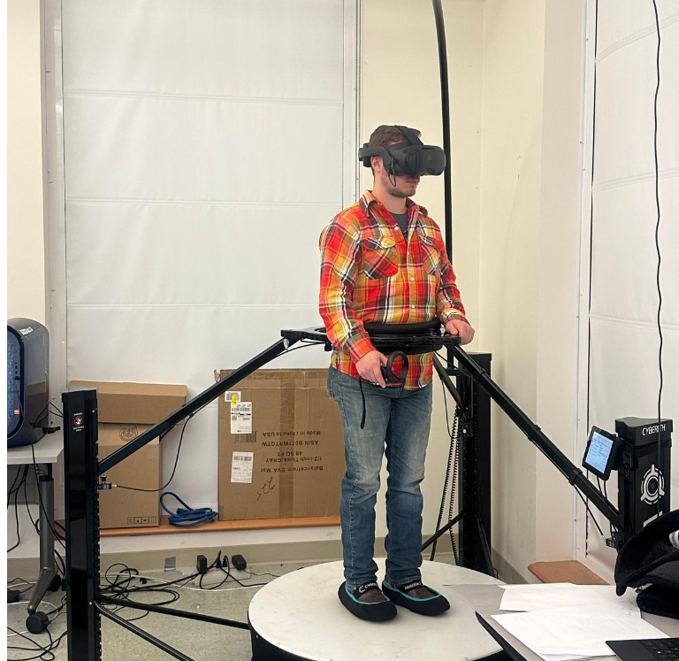
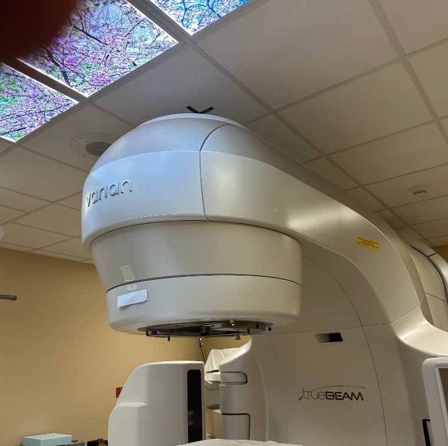
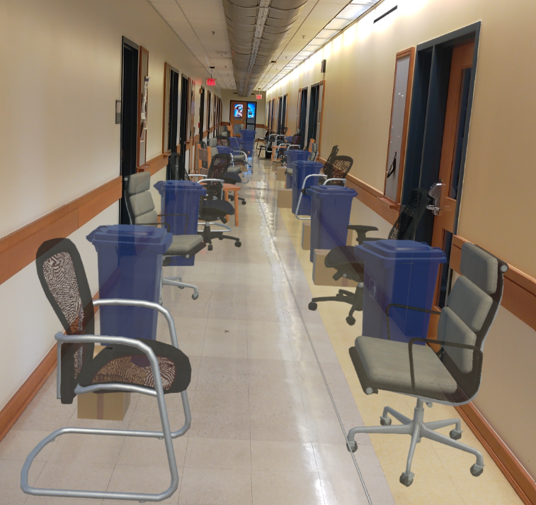
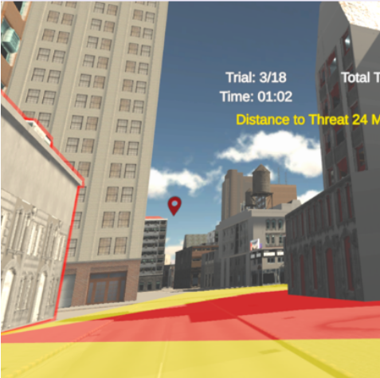

Projects
Selected research and applied projects in immersive technologies, perception, and accessibility.
Selected Projects

Locomotion and Distance Perception on Omnidirectional Treadmills
Investigating how locomotion parameters affect spatial perception in immersive virtual environments using the Cyberith Virtualizer Elite 2 treadmill.
Unity | C# | Virtual Reality | Cyberith Virtualizer Elite 2

Breathing Training System for Radiation Therapy (Vanderbilt University)
Developed a VR breathing training system to support patients preparing for radiation therapy by integrating physiological sensing and immersive feedback.
Unity | C# | Meta Quest | Bluetooth Sensors

Spatial Navigation in Augmented Reality with HoloLens
Studying how environmental clutter influences spatial navigation and distance perception in augmented reality using Microsoft HoloLens.
Unity | C# | Microsoft HoloLens | AR Spatial Mapping

Guiding Safe Pedestrian Navigation with Virtual Cues
Explores how virtual cues can improve safe pedestrian decisions in complex virtual street environments.
Unity | C# | AR Spatial Mapping | Human-Computer Interaction